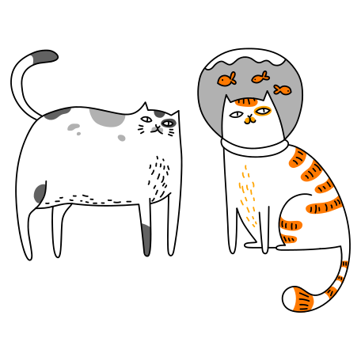

A propos
Cat To Home est un site web dédié à la sensibilisation au problème de l’abandon d’animaux et se veut être une solution complémentaire aux refuges pour permettre l’adoption d’un animal et mettant en relation des particuliers propriétaires d’animaux et des personnes souhaitant en adopter. L'idée de ce projet nous viens de Damien, notre cher product owner. Pourquoi ? Parce qu'il aime beaucoup les chats ! Il paraît que c'est bon les chats, surtout cuisiné en civet ou à la moutarde, un peu comme du lapin mais avec un gout plus prononcé. Ah.. On me dit dans l'oreillette que je ne suis pas sur un site de cuisine ! RAssurez-vous donc Damien ni aucun membre de l'équipe ne va manger vos chatons ! Les bébés dans le congélateur ok, mais manger des chats c'est pas ok ! OK ??
L'équipe des chatons
Damien, le Product Owner
She shook her head, and shook it again, as if trying to clear it, which is what she was trying to do. They did not realize that because of the quasi-reciprocal and circular nature of all Improbability calculations, anything that was Infinitely Improbable was actually very likely to happen almost immediately. If beauty is in the eye of the beholder, then the beholder won’t be a Vogon, because even Vogons know how ugly they are. Think of something crazy, or if that’s too taxing just throw random adjectives and nouns together. He smiled the smile that Zaphod had wanted to hit and this time Zaphod hit it.
Stéphane, le Lead Dev Back
She shook her head, and shook it again, as if trying to clear it, which is what she was trying to do. They did not realize that because of the quasi-reciprocal and circular nature of all Improbability calculations, anything that was Infinitely Improbable was actually very likely to happen almost immediately. If beauty is in the eye of the beholder, then the beholder won’t be a Vogon, because even Vogons know how ugly they are. Think of something crazy, or if that’s too taxing just throw random adjectives and nouns together. He smiled the smile that Zaphod had wanted to hit and this time Zaphod hit it.
Pierre, le Référent Git
She shook her head, and shook it again, as if trying to clear it, which is what she was trying to do. They did not realize that because of the quasi-reciprocal and circular nature of all Improbability calculations, anything that was Infinitely Improbable was actually very likely to happen almost immediately. If beauty is in the eye of the beholder, then the beholder won’t be a Vogon, because even Vogons know how ugly they are. Think of something crazy, or if that’s too taxing just throw random adjectives and nouns together. He smiled the smile that Zaphod had wanted to hit and this time Zaphod hit it.
Chloé, la Scrum Master
She shook her head, and shook it again, as if trying to clear it, which is what she was trying to do. They did not realize that because of the quasi-reciprocal and circular nature of all Improbability calculations, anything that was Infinitely Improbable was actually very likely to happen almost immediately. If beauty is in the eye of the beholder, then the beholder won’t be a Vogon, because even Vogons know how ugly they are. Think of something crazy, or if that’s too taxing just throw random adjectives and nouns together. He smiled the smile that Zaphod had wanted to hit and this time Zaphod hit it.
Antoine, le Lead Dev Front
She shook her head, and shook it again, as if trying to clear it, which is what she was trying to do. They did not realize that because of the quasi-reciprocal and circular nature of all Improbability calculations, anything that was Infinitely Improbable was actually very likely to happen almost immediately. If beauty is in the eye of the beholder, then the beholder won’t be a Vogon, because even Vogons know how ugly they are. Think of something crazy, or if that’s too taxing just throw random adjectives and nouns together. He smiled the smile that Zaphod had wanted to hit and this time Zaphod hit it.